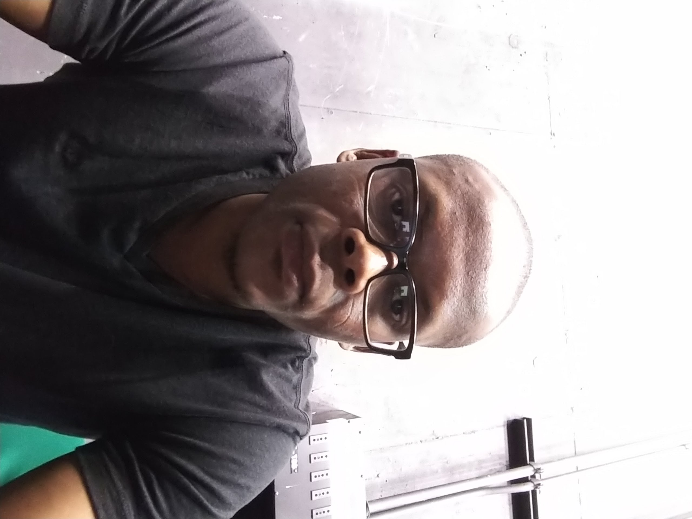

About Me
I have a diverse background that mostly revolves around computers. I decided to take up programming because of the current pandemic climate we are in.
As everything is moving online, coding will increase my versatility and value in the market place, as well as give me another stream of income
PROJECTS
My first website
http://github.com/Chadkoo/my-first-website
The first ever website I’ve made.
HTML, CSS
My favorite things
http://github.com/chadkoo/my-favorite-things
A site for my favorite things.
HTML, CSS
Fancy Rides
http://github.com/Chadkoo/fancy-rides
Some nice cars.
HTML, CSS
Hello World
http://github.com/Chadkoo/hello-world
Just practicing my programming skills
HTML CSS
My Pet
http://github.com/Chadkoo/my-pet
Sharing information about m pet
HTML, CSS
Tunzwa Health Care
http://github.com/Chadkoo/tunzwa
A business dealing in home health care.
HTML, CSS
Quick Bites
http://github.com/Chadkoo/quick-bites
A fast food restaurant
HTML, CSS